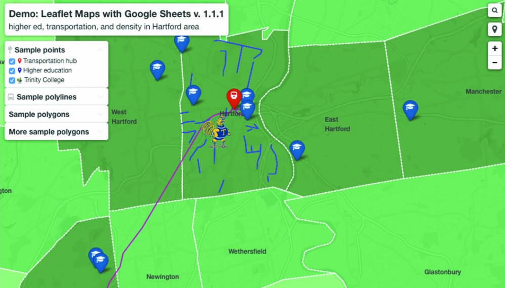

Chapter 11 Leaflet Map Templates
In Chapter 6: Map Your Data, we described several drag-and-drop tools designed for beginners, such as Google My Maps and Datawrapper. In this chapter, we offer more advanced map tutorials using our open-source code templates, which you can copy and modify with skills you learned in Chapter 9: Edit and Host Code with GitHub. We built all of the templates in this chapter with Leaflet, a powerful open-source code library for creating interactive maps on desktop or mobile devices.
No coding skills are required to use our first two easy-to-use templates because they pull your map data from a linked Google Sheet. The first template, Leaflet Maps with Google Sheets, is a general-purpose tool that can display points, polygons, or polylines, using your choice of colors, icons, and images, based on data uploaded into your linked Google Sheet and GitHub repository. It also includes the option to display a table of point markers next to your map. The second template, Leaflet Storymaps with Google Sheets, displays your map as a scrolling narrative of chapters to guide readers through a storyline, with the option to display paragraphs of text, images, audio or video clips, and historical map backgrounds loaded into your linked Google Sheet and GitHub repo. If you wish to add some of these extra features, look back at Chapter 2 to geocode addresses with a Google Sheets Add-on, or jump ahead to Chapter 12: Transform Your Map Data to learn how to create and edit polygons and polylines with the GeoJson.io tool, edit or join data with polygons using the MapShaper tool, or georectify a scanned map to use as a background overlay with the MapWarper tool.
Our remaining Leaflet templates are designed to help users develop their map coding skills. Even if you have no prior coding experience, but can follow instructions and are code-curious about how things work on your computer, start with the Leaflet Maps with CSV Data tutorial, which walks you through the steps of creating a point map that pulls data from a CSV file, a generic spreadsheet format we discussed in Chapter 2. Then move on to the Leaflet Maps with Open Data API tutorial, to learn how to code using an application program interface to pull information directly from open data repositories as we described in Chapter 3. In both of these templates, you’ll learn how Leaflet maps are written using three coding languages:
- HTML: to structure content on the web page, typically in a file named
index.html. - CSS or Cascading Style Sheet: to shape how content appears on the page, either inside
index.htmlor in a separate file such asstyle.css. - JavaScript: to create the interactive map using instructions from the Leaflet code library, either inside
index.htmlon in a separate file, such asscript.js.
Explore our Leaflet map templates and you’ll also see how they refer to different code components, such as basemap tiles from various open-access online providers, such as Carto, Esri, Stamen, and Open Street Map, that allow you to zoom into background maps. You’ll also see data files to place information about points, polygons, or polylines on top of the map, usually in CSV or GeoJSON format—see chapter 12, with names similar to data.csv or map.geojson. If you’re new to coding, creating Leaflet maps can be a great place to start and quickly see the results of what you’ve learned. To help you solve problems that may arise, see Fix Common Mistakes in the appendix.
| Map Templates | Best use and tutorials in this book |
|---|---|
| Leaflet Maps with Google Sheets  |
Best to show interactive points, polygons, or polylines, using your choice of colors, styles, and icons, based on data loaded into your linked Google Sheet (or CSV file) and GitHub repository. Includes option to display a table of point map markers next to your map. Template with tutorial: Leaflet Maps with Google Sheets |
Leaflet Storymaps with Google Sheets |
Best to display your map as a scrolling narrative of chapters to guide readers through a storyline, with the option to include paragraphs of text, images, audio or video clips, and historical map backgrounds loaded into your linked Google Sheet (or CSV) and GitHub repo. Template with tutorial: Leaflet Storymaps with Google Sheets |
Leaflet Maps with CSV Data |
Learn how to code your own Leaflet point map that pulls data from a CSV file in your GitHub repo. Template with tutorial: Leaflet Maps with CSV Data |
Leaflet Maps with Open Data API |
Learn how to code your own Leaflet map with an application program interface (API) that pulls content directly from open data repositories, such as Socrata and others. Template with tutorial: Leaflet Maps with Open Data API |
TODO: decide whether to add any other Leaflet map templates we created for HandsOnDataViz or OnTheLine